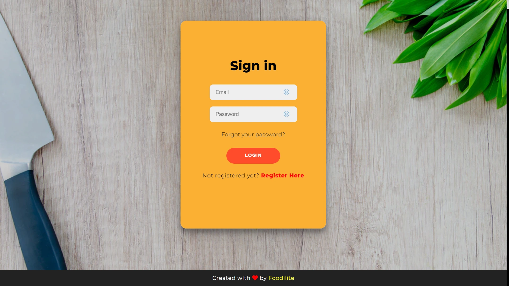
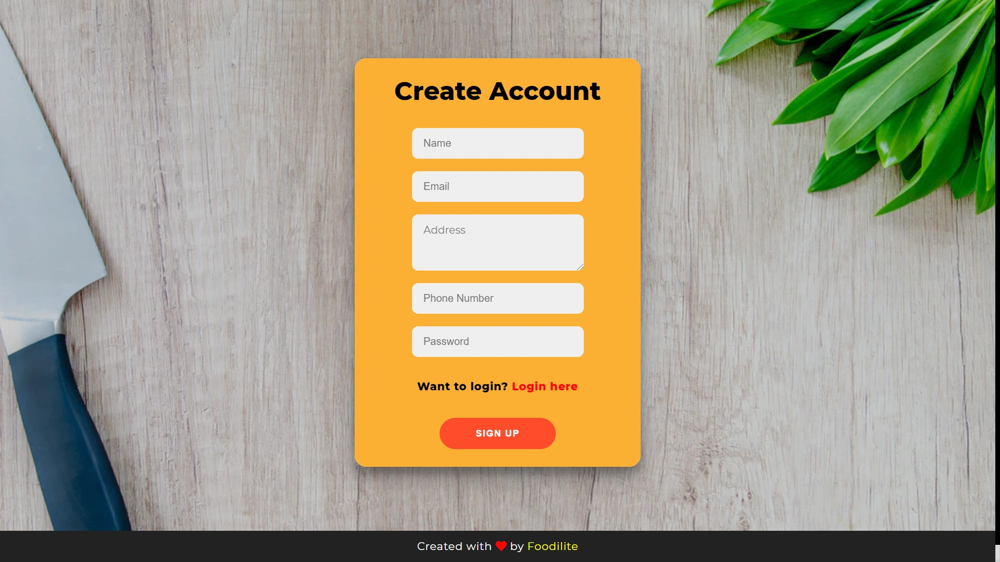
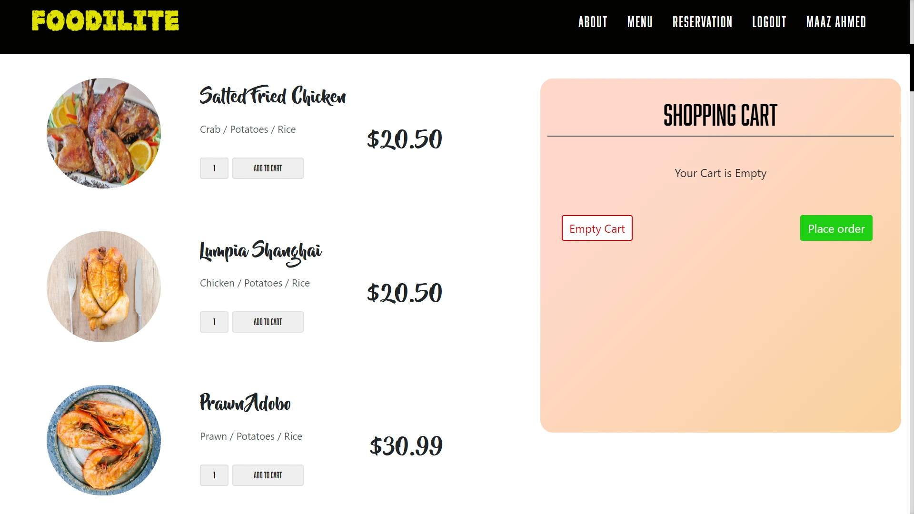
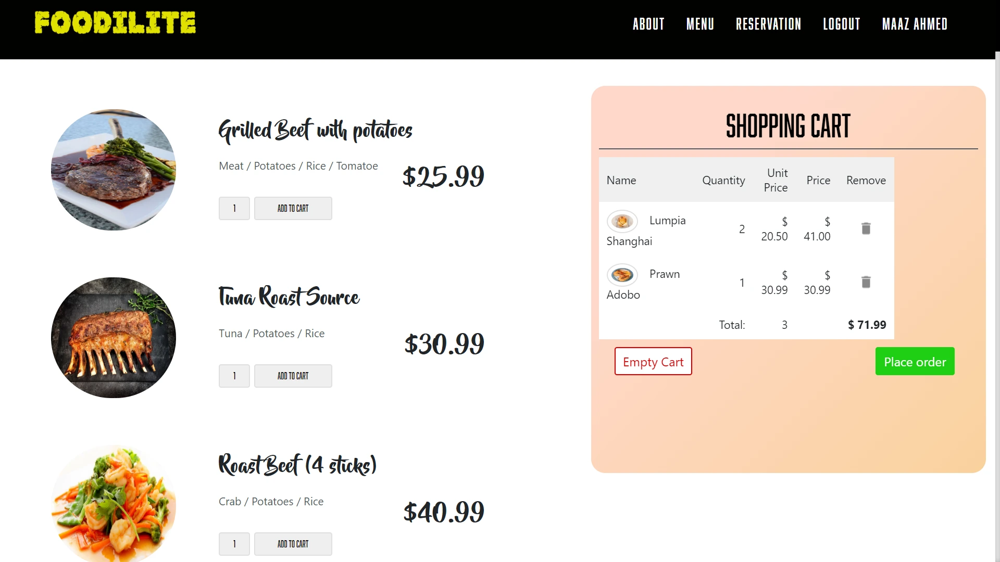
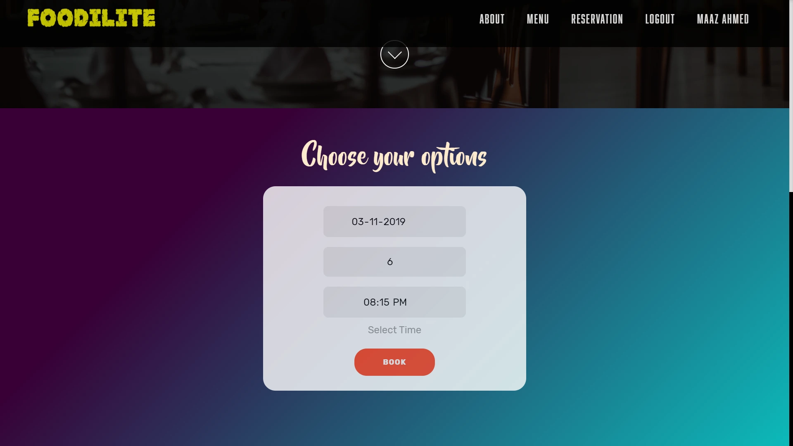
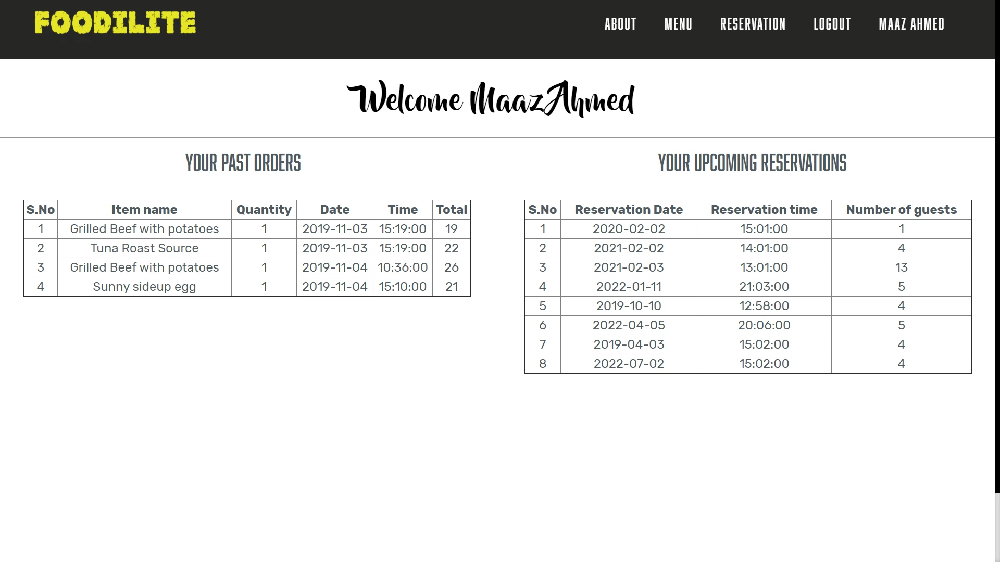

Restaurant DB Management System
Efficiency Elevated, Experience Enhanced: Introducing my Restaurant Database Management System - a robust solution
streamlining restaurant operations and delivering a seamless management experience.
Check out the repository here: Github Repository 
Project Details / Background
The Restaurant Database Management System project emerged from a relational Database Management class during my
undergraduate studies at NMAM Institute of Technology. Throughout the course, I gained a comprehensive understanding of
database concepts, design principles, and query optimization techniques.
Motivated by a desire to apply my knowledge in a practical setting, I identified a local restaurant facing challenges
with their manual management processes. Recognizing the potential to make a tangible impact, I embarked on developing a
tailored solution that would simplify their operations and optimize data management.
Drawing on my expertise in database design, I crafted the Restaurant Database Management System. While it may not have
been the most complex system, it encompassed enough features to effectively assist the restaurant. The system allowed
for the storage and organization of crucial information such as menus, reservations, orders, inventory, and customer
details.
To ensure usability and efficiency, I implemented optimized query techniques and fine-tuned the system's performance. By
leveraging my knowledge of query optimization and indexing, I improved response times and facilitated quick
decision-making for the restaurant staff.
Throughout the development process, I actively collaborated with the restaurant staff, gathering their feedback and
incorporating their specific requirements. This iterative approach allowed me to refine the system, ensuring it provided
enough features to simplify their operations and enhance their efficiency.
In conclusion, the Restaurant Database Management System project showcases my ability to apply theoretical knowledge to
real-world challenges. While not the most complex system, it effectively addressed the needs of the local restaurant,
simplifying their operations and optimizing their data management. This project demonstrates my commitment to delivering
practical solutions and my ability to develop customized software solutions tailored to specific business requirements.
Limitations of the Previous System
The local restaurant faced several limitations and challenges with their manual management processes. These limitations
included:
1. Time-consuming manual processes for tasks like menu updates, table reservations, order processing, and inventory
management.
2. Increased risk of human errors in data entry, leading to inaccuracies in orders, inventory, and reservations.
3. Lack of real-time information on table availability, ingredient stocks, and customer preferences, hindering prompt
customer service.
4. Limited accessibility and analysis of historical data, making it difficult to generate reports and make informed
decisions.
5. Security vulnerabilities with no proper data protection measures, risking customer privacy and data integrity.
Features
1. Menu Management: Easily update and organize menu items, including descriptions, prices, and categories. Simplify menu modifications
without the need for manual changes.
2. Table Reservations: Enable customers to reserve tables seamlessly through the system, ensuring efficient table allocation and minimizing
conflicts. Provide basic reservation details without complex customization options.
3. Order Processing: Streamline order taking and processing, allowing staff to quickly enter and manage orders received both online and
offline. Ensure accurate order details and facilitate communication with the kitchen for efficient preparation.
4. Inventory Management: Administrators have access to a
dedicated dashboard to oversee and manage the grievance process effectively. This
ensures that complaints are addressed promptly and no issues are overlooked.
5. User-Friendly Interface: Robust authentication ensures the
security and confidentiality of user information.
6. Online Ordering: Allow customers to conveniently place orders online through the system. Enable them to browse the menu, customize their
selections, and submit their orders digitally.
7. Scalability: Accommodate the needs of a growing restaurant business by allowing for future data expansion and user capacity. Ensure
the system remains responsive and stable as the restaurant grows.
8. Data Security: Implement basic data security measures to protect customer information and ensure data confidentiality. Apply standard
access controls and encryption techniques for data protection.
Advantages of the New System
1. Increased Efficiency: Streamline operations and reduce errors with automated processes for menu updates, table reservations, order processing,
and inventory management.
2. Improved Customer Service: Enhance the dining experience with features like online ordering and seamless table reservations, providing convenience
and satisfaction to customers.
3. Accurate Data Management: Ensure data integrity with precise menu information, proper inventory tracking, and effective customer relationship
management.
4. Real-time Information: Access up-to-date data on table availability, order status, and ingredient stocks for prompt decision-making and
efficient service.
5. Enhanced Security: Protect customer information and maintain data privacy with robust security measures, fostering trust and compliance
with regulations.
6. Scalability and Flexibility: Accommodate business growth with a system that scales to increased data volume and user demand, adapting to changing
needs.
7. User-Friendly Interface: Ensure ease of use with an intuitive interface that requires minimal training, allowing for swift adoption and minimal
disruption.
Technologies Used
Gallery

Login Page

SignUp page

Menu Page

Cart feature

Table reservation page

User dashboard view